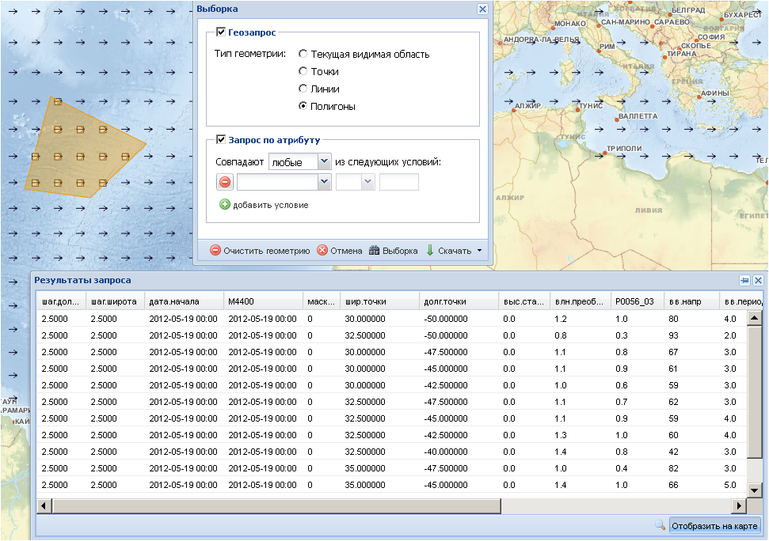

Выборка
Инструмент Выборка позволяет осуществлять выбор объектов по запросу пользователя и применим к векторным слоям (точки и изолинии). Для пользования данной командой нужно отобразить необходимый слой в рабочем окне и сделать его активным. По команде раскрывается дополнительное окно Выборка, имеющее две опции – Геозапрос и Запрос по атрибуту.

Опция Геозапрос используется для выборки объектов слоя геометрическими фигурами – точками, линиями или полигонами. Отметив галочкой необходимую геометрическую фигуру, ее нужно нанести в заданном районе карты и нажать кнопку  . Появится дополнительное окно Результаты запроса, в котором будут приведены все объекты, попавшие в границы выбранной геометрической фигуры, с их атрибутивными характеристиками. С помощью команды Отобразить на карте в правом нижнем углу дополнительного окна можно подсветить все объекты, попавшие в выборку.
. Появится дополнительное окно Результаты запроса, в котором будут приведены все объекты, попавшие в границы выбранной геометрической фигуры, с их атрибутивными характеристиками. С помощью команды Отобразить на карте в правом нижнем углу дополнительного окна можно подсветить все объекты, попавшие в выборку.

Если в Типе геометрии отметить галочкой Текущая видимая область, то в окне Результаты запроса будут приведены все объекты рабочего окна карты.
Опция Запрос по атрибуту дает возможность выбрать объект по его атрибутивной информации и используется для задания параметров включения объектов слоя в данную выборку. Для этого в ниспадающем списке окошка выбирается атрибутивное поле, по которому вводится ограничение, в смежном окошке выбирается тип оператора, в следующем – вводится значение.
Если одного условия для задания параметров не достаточно, можно добавить их необходимое количество с помощью опции Добавить условие.

Закончив задание параметров для запроса, необходимо нажать кнопку . В появившемся дополнительном окне Результаты запроса будут перечислены все объекты слоя, удовлетворяющие заданным условиям запроса.

При желании их можно «подсветить» на карте, нажав кнопку Отобразить на карте.